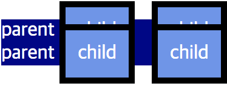

none : 요소가 렌더링 되지 않음 inline : inline level 요소처럼 렌더링 block : block level 요소처럼 렌더링 inline-block : inline level 요소처럼 렌더링되지만 block level의 성질을 가짐 -> height나 width 등과 같은 박스모델 속성을 적용할 수 있다.
그외에 list-item, flex, inline-flex, table, table-cell 등 다양한 속성 값 존재
inline level 요소 사이의 공백과 개행 처리
inline 요소의 경우 공백과 개행에 대해서 하나의 여백으로 받아들인다.
따라서 inline와 inline-block의 경우 태그 사이의 공백이나 개행이 있을 경우 약 4px의 여백을 가지게 된다.
display와 box model의 관계
display
width
height
margin
padding
border
block
O
O
O
O
O
inline
X
X
좌/우
O (설명)
O (설명)
inline-block
O
O
O
O
O
(+) inline 요소의 padding/border 속성이 좌/우 만 적용 된다고 표시한 이유 추가 설명
실제로 inline 요소의 padding/border는 좌/우뿐만 아니라 상/하에도 적용이 된다.
parent는 div, child는 span
하지만 상/하 padding/border는 line-box에는 영향을 주지 못하기 때문에
위와 같이 부모 요소의 박스에 반영되지 않음
 parent는 div, child는 span
또한 인접한 다른 line-box 에도 반영되지않습니다. 즉 콘텐츠가 겹칠 수 있기 때문에 실무에서는 잘 사용하지 않음